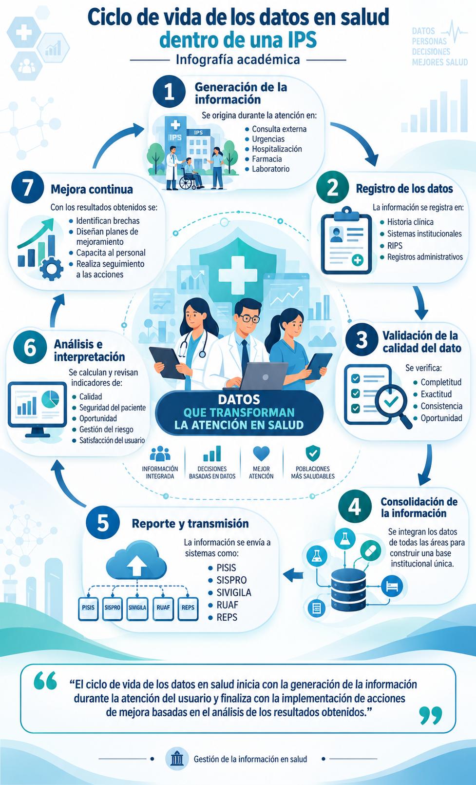

Explora el ciclo
Selecciona una etapa para ver cómo los datos acompañan la atención y apoyan la mejora continua en salud.

Selecciona una etapa para ver cómo los datos acompañan la atención y apoyan la mejora continua en salud.